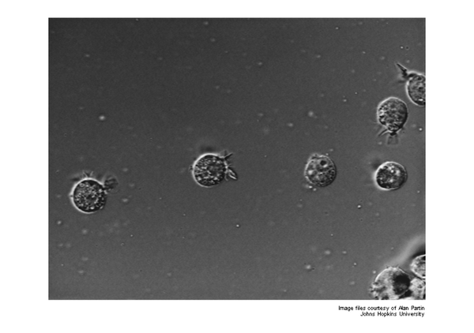
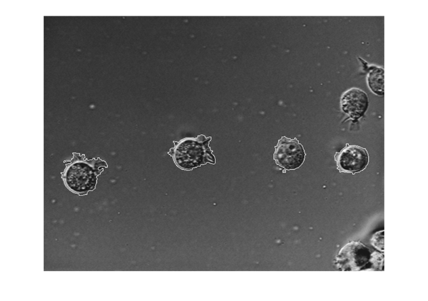
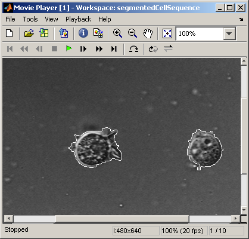

Batch Processing Image Files in Parallel
A common image processing task is to apply an image processing algorithm to a series of files. This procedure can be time consuming if the algorithm is computationally intensive, if you are processing a large number of files, or if the files are very large. This demo shows how to batch process a set of image files in parallel.
Batch processing performance can be improved if you have the Parallel Computing Toolbox™ software.
Contents
Get the Names of Files to be Processed
List the filenames with a common prefix. In this example, the image files are a set of 10 microscope images of rat prostate cancer cells. These files are only the first 10 of 100 images that were acquired.
p = which('AT3_1m4_01.tif'); filelist = dir([fileparts(p) filesep 'AT3_1m4_*.tif']); fileNames = {filelist.name}'
fileNames =
'AT3_1m4_01.tif'
'AT3_1m4_02.tif'
'AT3_1m4_03.tif'
'AT3_1m4_04.tif'
'AT3_1m4_05.tif'
'AT3_1m4_06.tif'
'AT3_1m4_07.tif'
'AT3_1m4_08.tif'
'AT3_1m4_09.tif'
'AT3_1m4_10.tif'
View one of the images.
I = imread(fileNames{1});
imshow(I)
text(size(I,2),size(I,1)+15, ...
'Image files courtesy of Alan Partin', ...
'FontSize',7,'HorizontalAlignment','right');
text(size(I,2),size(I,1)+25, ...
'Johns Hopkins University', ...
'FontSize',7,'HorizontalAlignment','right');
 Define Image Processing Algorithm to Use on Each Image
Create an image processing function that segments non-touching cells in the microscope images. Test the function on one of your images.
segmentedCells = batchDetectCells(I); figure, imshow(segmentedCells)
To view batchDetectCells use this command.
type batchDetectCells
function segmentedCells = batchDetectCells(I)
%batchDetectCells Algorithm to detect cells in image.
% segmentedCells = batchDetectCells(I) detects cells in the cell
% image I and returns the result in segmentedCells.
%
% Supports batch processing demo, ipexbatch.
% Copyright 2005-2009 The MathWorks, Inc.
% Use |edge| and the Sobel operator to calculate the threshold
% value. Tune the threshold value and use |edge| again to obtain a
% binary mask that contains the segmented cell.
[~, threshold] = edge(I, 'sobel');
fudgeFactor = .5;
BW = edge(I,'sobel', threshold * fudgeFactor);
se90 = strel('line', 3, 90);
se0 = strel('line', 3, 0);
BWdilate = imdilate(BW, [se90 se0]);
BWnobord = imclearborder(BWdilate, 4);
BWopen = bwareaopen(BWnobord,200);
BWclose = bwmorph(BWopen,'close');
BWfill = imfill(BWclose, 'holes');
BWoutline = bwperim(BWfill);
segmentedCells = I;
segmentedCells(BWoutline) = 255;
Loop over Images
The function batchProcessFiles uses parfor to process each image independently. This works like a regular for loop but can take advantage of multiple processors if you have the Parallel Computing Toolbox software as described below.
To view batchProcessFiles use this command.
type batchProcessFiles
function segmentedCellSequence = batchProcessFiles(fileNames,fcn)
%batchProcessFiles Process image files.
% SEQUENCE = batchProcessFiles(FILENAMES,FCN) loops over all the files
% listed in FILENAMES, calls the function FCN on each of them, and combines
% the results in SEQUENCE. FCN is a function handle for a function with
% signature: B = FCN(A).
%
% Supports batch processing demo, ipexbatch.
% Copyright 2007-2009 The MathWorks, Inc.
I = imread(fileNames{1});
[mrows,ncols] = size(I);
nImages = length(fileNames);
segmentedCellSequence = zeros(mrows,ncols,nImages,class(I));
parfor (k = 1:nImages)
I = imread(fileNames{k});
segmentedCellSequence(:,:,k) = fcn(I);
end
If you have the Parallel Computing Toolbox software, you can use up to 4 local workers to distribute each cycle through the loop to a different worker. If you also have the MATLAB® Distributed Computing Server™, you can run your batch processing job on a cluster.
You can allocate workers with this command.
matlabpool open 4
Now call batchProcessFiles to apply the cell detection algorithm to each file.
segmentedCellSequence = batchProcessFiles(fileNames,@batchDetectCells);
Clean Up
If you called matlabpool to start some workers, be sure to close them.
matlabpool close
Display Results
Run the following command to see the sequence in implay.
implay(segmentedCellSequence)
If you have data that does not all fit in memory, instead of returning the segmented image data in one large array, you can modify the body of the parfor loop in batchProcessFiles.m to either write each segmented image to a new file or write the whole segmented sequence to a multimedia file one image at a time. Then, you could review the results separate from the processing.